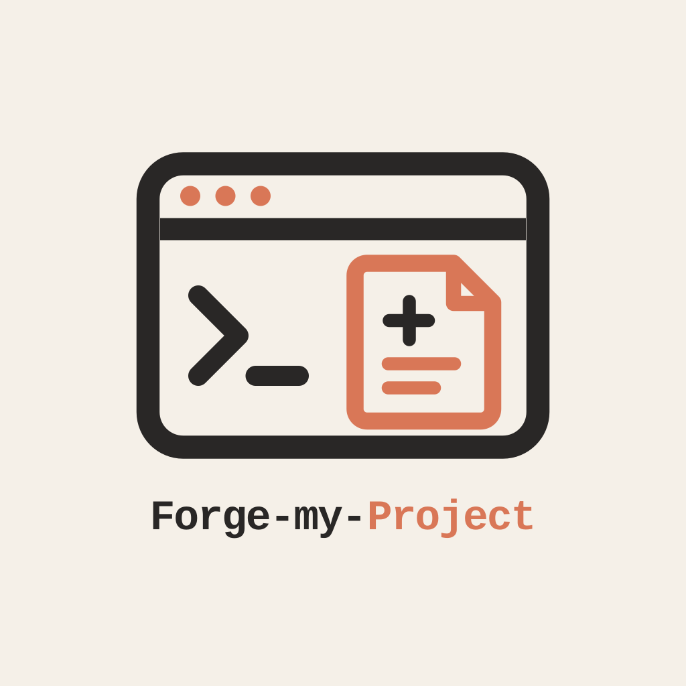

GÉNÉRATEUR LOCAL · LINUX
Préparer un projet solide,
avant la première ligne.
Configurez architecture, règles agents, sécurité, tests et CI. Forge construit un aperçu local; rien n'est écrit sans votre validation.